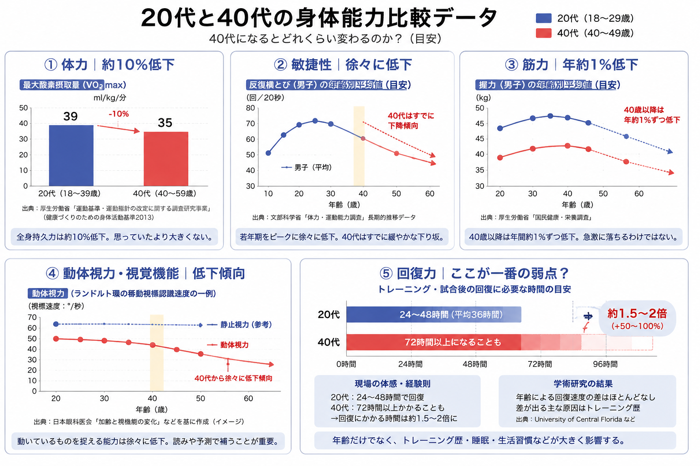

飛べない40代卓球愛好家の視点
「20代、30代に全然勝てない説」
40代中盤、卓球歴は10年ほど。
20代・30代のプレイヤーと練習していると、 上達するスピードの違いを感じることが増えてきた。
以前ならそれほど差を感じなかった相手でも、 気がつけば追いつかれ、勝つのが難しくなっている。
40代になると何が変わるのか。そして、本当に年齢による身体能力の差が原因なのか。
40代卓球愛好家としての実感と、実際のデータを合わせて考えてみた。
40代になって感じる「勝てなくなる理由」
まず感じるのが、疲労の抜けにくさ。
大した練習をしていないはずなのに疲労が残る。
練習ではそれほどでもないのに、試合になると力が入ってしまうのか、 終わった後に身体が痛くなることもある。場合によっては私生活にまで影響する。
もう一つ感じるのが、成長速度の違い。
20代・30代のプレイヤーは、新しい技術を身につけるのが早いように感じる。 同じように練習していても、少しずつ差が広がっていく。
さらに、40代からもう一段上を目指そうとすると、 練習環境を作ること自体の難しさもある。
若いプレイヤーのように自然と教えてもらえる機会が多いとは限らず、 自分から練習場所や相手を探す必要がある。
上手な若いプレイヤーから良い練習相手と思ってもらうためには、 こちらにもそれなりの技術や強みが必要になる。
40代から見る20代プレイヤー
これはかなり感じるが、単純に身体が軽そうに見える。
おそらく回復も早い。
そこそこ上手ければ歓迎されやすく、なぜか技術の吸収も早く見える。
ただ、自分の若い頃を振り返ってみると、 今ほど「疲れた」「疲労が抜けない」と考えていなかったような気もする。
若い頃には当たり前だったものが、 40代になって初めてアドバンテージだったことに気づく。
では、実際どれくらい違うのか
感覚ではかなり違う。
では、20代と40代では身体能力にどれくらい差があるのだろうか。
体力｜約10％低下
男性の最大酸素摂取量の基準値は、 18〜39歳が39ml/kg/分、40〜59歳が35ml/kg/分。
年代区分を単純比較すると、差は約10％。
思っていたより大きくない。
出典： 健康長寿ネット「最大酸素摂取量」
敏捷性｜徐々に低下
反復横とびなどの敏捷性は若年期をピークに、その後は徐々に低下していく。
40代ですでに低下傾向にはあるものの、 「40代になると○％落ちる」と単純に表すのは難しい。
筋力｜40歳以降、年約1％低下
筋力も40代になった途端に大きく落ちるわけではない。
地域在住の中高年者を対象とした研究では、男女とも40歳以降、 握力と下肢筋力が年間約1％ずつ低下していたと報告されている。
40代は筋力がなくなる年代というより、 少しずつ低下が始まる年代に近い。
出典： 日本老年医学会雑誌
動体視力・視覚機能｜低下傾向
卓球では普通の視力だけでなく、動いているボールを捉える能力も重要になる。
視覚機能も加齢によって徐々に変化する。
ただし卓球の場合、相手のフォームやラケットの向きからコースを予測する 「読み」もあるため、単純な視力だけでは比較できない。
回復力｜ここが一番の弱点？
個人的には、結局ここが一番気になる。
体力は約10％低下。筋力も40代で急激に落ちるわけではない。
数字だけを見ると、20代とそこまで圧倒的な差があるようには見えない。
それなのに、実際に卓球をすると若い人との差をかなり感じる。
その理由の一つが、回復力なのではないかと思う。
回復に72時間以上かかることも？
40〜50代の疲労回復について、現場のトレーナーなどからは、 若い頃なら24〜48時間程度で回復していた疲労が、 72時間以上残るケースもある、という目安も示されている。
この辺りが、いつも疲れている原因な気が少ししてきました。

全日本マスターズのフォーティはどうなのか
では、データではなく、実際に40代の強い選手はどれくらい強いのか。
全日本卓球選手権大会（マスターズの部）には、 40歳以上を対象とした「フォーティ」がある。
日本卓球協会の公式結果を見ると、2024年の男子フォーティ優勝は三田村宗明選手。 三田村選手は2021年、2022年にも男子フォーティを制しており、 2024年に再び優勝している。
歴代優勝者を見ても、複数回優勝している選手がいる。
つまり、フォーティは当然ながら 「40歳になって衰えた人たちが出る大会」ではない。
40代でも、とんでもなく強い人は普通に強い。
実際のマスターズの試合を見てみる
実際のマスターズの試合を見ると、 40代でもスピード、コース取り、ラリーの質がかなり高いことが分かる。
全日本マスターズ・フォーティの対戦動画。
練習して1回くらい本戦に出てみたい野望はあるものの、 日々バタ（倒）フライです。
がんばりたいですね！
"Still Playing. Still Improving."